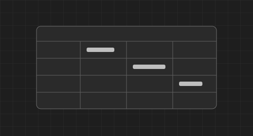

Ilustración conceptual
Ilustración conceptualInnovación · propuesta conceptual
Wireless Charging Deskpad
Exploración de una superficie de trabajo con transferencia inalámbrica de energía.
Proyectos académicos, experiencia práctica y propuestas de innovación.
Ilustración conceptualExploración de una superficie de trabajo con transferencia inalámbrica de energía.
 Ilustración conceptual
Ilustración conceptualEstudio de grafos, algoritmos y modelos de optimización.
 Ilustración conceptual
Ilustración conceptualProgramación de sistemas y fundamentos de concurrencia.
 Ilustración conceptual
Ilustración conceptualAplicación del algoritmo de Dijkstra a grafos en C.
 Ilustración conceptual
Ilustración conceptualJuego del ahorcado con recursos de lenguaje.

Ilustración conceptualSitio informativo y planillas de inventario y ventas.
Consulta los repositorios en GitHub.